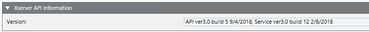
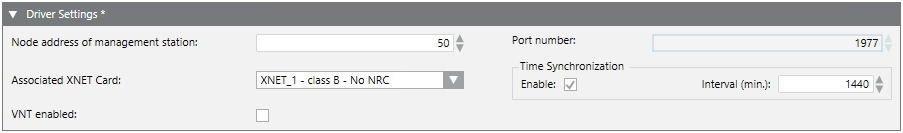
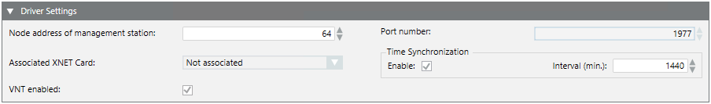
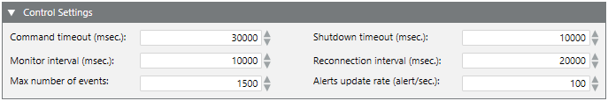

XNET Driver Configuration Reference
This section provides some reference information about the XNET driver configuration parameters.
For a guide to the XNET driver configuration procedures, depending on the type of network, see:
- Configure XNET Driver for XNET Card
- Configure the XNET Driver for GCNET/VNT
- For Fire WAN driver information, search for Configure the Fire WAN Driver.
XNET Driver X-Server API Information Reference
In the XNET tab of the driver, the XServer API Information expander displays the version of the currently connected X-Server communication interface. This version information is acquired as soon as the internal connection is established between the driver and the server software.
The information string includes:
- API (Application Program Interface for the X-Driver) version, build number, and date.
- Service (server software component) version, build number, and date.

XNET Driver Settings Reference
In the XNET tab of the driver, in the Driver Settings expander, you can configure the following parameters:
- GMS node address: The address of the station in the XNET, as configured in the panels.
- Port: 1977 (default setting).
You may need to change the default setting in case of a special configuration or if instructed by technical support.
NOTE: If you are working on a project created in version 1.0 and then restored to the current version, the default value is set to 1947. In such a case, to avoid loss of data due to ports conflicts, you must manually change the value to 1977, or to the value required by technical support. - Associated XNET Card: The communication card that is used by the driver.
NOTE 1: You must configure the previous fields, save and then start the driver before being able to select the associated XNET card.
NOTE 2: This field is disabled if the VNT enabled check box is selected (no XNET card is needed). - Time Synchronization: This check box enables the station to synchronize the networked panels with the current date and time.
Interval: Value in minutes. The default is 1440 (24 hours).
NOTE: The time synchronization also occurs when you manually adjust the clock time on the management station or upon daylight saving time switches. - VNT enabled: This check box must be enabled for GCNET solutions, when XNET is connected over a large network via a VNT device.


XNET Driver Control Settings Reference
In the XNET tab of the driver, in the Control Settings expander, you can customize the following technical parameters:
- Command timeout: Value in milliseconds.
NOTE: The default setting is 30,000. You may need to change it in case of a special configuration or if instructed by technical support, if the driver reports a command failure and generates an error log. - Monitor interval: Value in milliseconds.
NOTE: The default setting is 10,000. You may need to change it in case of a special configuration or if instructed to by technical support, if the XNET control units reports a disconnection from the Desigo CC management station. - Max number of events: This value defines the maximum numbers of events handled by the driver.
NOTE: The default setting is 1500. You may want to change it in case of a special configuration or if instructed to by technical support. - Shutdown timeout: Value in milliseconds.
NOTE: The default setting is 10,000. You may need to change it in case of a special configuration or if instructed to by technical support, if the driver generates a shutdown error log in case this timeout expires. - Reconnection interval: Value in milliseconds.
NOTE: The default setting is 20,000. You may need to change it in case of a special configuration or if instructed to by technical support, to modify the delay between the attempts of the XNET driver to reconnect after a communication failure. - Alert Update Rate: This value indicates the maximum numbers of events per second handled by the driver.
NOTE: The default setting is 100. You may need to change it in case of a special configuration or if instructed to by technical support.
